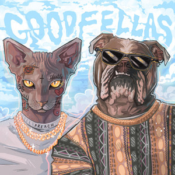
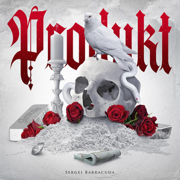
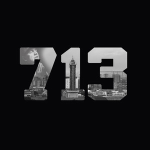
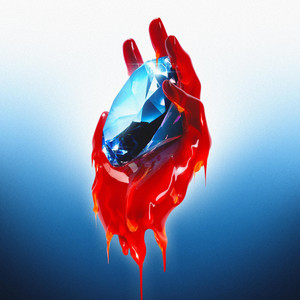
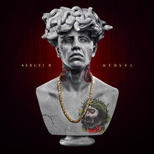

.png)
Sergei Barracuda
Sergei Barracuda (vlastním jménem Erik Peter) je český rapper pocházející z Ostravy. Patří mezi nejvýraznější osobnosti tvrdší větve českého rapu a je známý svým syrovým projevem, autenticitou a pouliční estetikou.
Dětství
Vyrůstal v Ostravě, kde se už od mládí pohyboval kolem hudby a street kultury. V raném věku skládal vlastní texty, zajímal se o tanec a sport. Má základní vzdělání a už v dospívání ho začal přitahovat hip hop jako způsob sebevyjádření.
Počátky kariéry
S rapem začal kolem roku 2010. Nejprve působil v ostravském seskupení Fuerza Arma, odkud později odešel kvůli neshodám s Yzomandiasem. Následně se připojil k labelu Azurit Kingdom, který založil rapper Pastor.
Společně s Pastorem a DJ Bussym tvořili skupinu AK. Pod tímto názvem vydali v roce 2014 AK Mixtape a v roce 2015 album Bída & Bolest, které se stalo jedním z nejvýraznějších projektů ostravské scény. Poslední album labelu Syndikát vyšlo v roce 2019. Kvůli vnitřním neshodám se AK v březnu 2020 rozpadlo.
Sólo kariéra
Sergei Barracuda se postupně etabloval jako silná sólová osobnost. Jeho projekty ze série Pouliční Ekonomická se staly kultovní záležitostí a definovaly jeho image – otevřené texty o ulici, drogách, penězích i osobních pádech.
Největší úspěchy
- Budem se mít fajn (2021) – ocenění za nejlepší český hudební videoklip roku
- BANGER. (2022) – role sebe sama ve filmu režiséra Adama Sedláka
- Zaytoven Challenge (2024) – vítěz světové beatové soutěže s vlastním beatem
- dlouhodobě milionové streamy na Spotify a YouTube
Styl a témata
-
Tvorba Sergeie Barracudy se často zaměřuje na:
- život na ulici a realitu Ostravy
- peníze, úspěch a přežití
- drogy a jejich vliv na psychiku
- loajalitu, zradu a osobní pády
Jeho styl je tvrdý, přímočarý a autentický, často doplněný temnými beaty a surovou atmosférou.
Osobní život
Aktivně se věnoval basketbalu, který hrál i na vyšší úrovni. Ve své tvorbě otevřeně mluví o užívání drog, které podle něj ovlivnily jeho život i hudbu. Sám k tomu uvedl: „Drogy jsem bral jako vědecký výzkum.“
Diskografie
- 2010 – Pouliční Ekonomická (Mixtape)
- 2011 – Život v Bloku (EP)
- 2012 – Pouliční Ekonomická 2 – Nechvalně proslulý
- 2014 – AK – AK Mixtape
- 2015 – AK – Bída & Bolest
- 2016 – Pouliční Ekonomická 2.5 – Notorický Hustler
- 2017 – 713 (Mixtape)
- 2018 – Pouliční Ekonomická 3 – Láska & Loyalita
- 2019 – Medusa
- 2019 – AK – Syndikát
- 2020 – Medusa II
- 2021 – Produkt
- 2021 – Kila Zdarma (s Hard Rico)
- 2022 – Finesa
- 2023 – Růst & Prosperita
- 2023 – Goodfellas (s Palermo)
- 2024 – 713 až na věky

Alba
 713 až na věky
713 až na věky

Goodfellas Růst & Prosperita
Růst & Prosperita
.jpg) Kila Zdarma (Mixtape)
Kila Zdarma (Mixtape)

Produkt.jpg) Pouliční Ekonomická (Remastered)
Pouliční Ekonomická (Remastered)
.jpg) Pouliční Ekonomická 3: Láska & Loyalita (Deluxe Version)
Pouliční Ekonomická 3: Láska & Loyalita (Deluxe Version)
 Pouliční Ekonomická 3: Láska & Loyalita
Pouliční Ekonomická 3: Láska & Loyalita

713 Pouliční Ekonomická 2.5: Nototická Hustler
Pouliční Ekonomická 2.5: Nototická Hustler
 Pouliční Ekonomická II - Nechvalné proslulý
Pouliční Ekonomická II - Nechvalné proslulý
 Medusa II
Medusa II

Finesa
Medusa